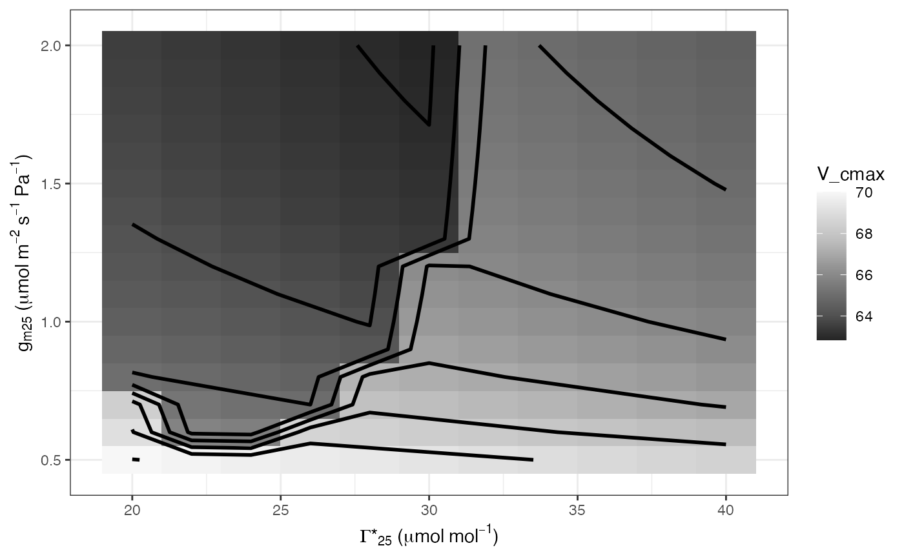

Running 2-parameter sensitivity analyses
analyze_sensitivity( data, funct, test1 = NA, values1, test2 = NA, values2, element_out = 1, ... )
| data | Dataframe |
|---|---|
| funct | Function to use - do not use parentheses |
| test1 | Input parameter to vary and test |
| values1 | Values of test1 to use |
| test2 | Input parameter to vary and test |
| values2 | Values of test2 to use |
| element_out | List element to compile |
| ... | Additional arguments required for the function |
analyze_sensitivity runs a 2-parameter sensitivity analysis. Note that any parameter value combinations that break the input function WILL break this function. For 1-parameter sensitivity analysis, use test1 only.
# \donttest{ # Read in your data # Note that this data is coming from data supplied by the package # hence the complicated argument in read.csv() # This dataset is a CO2 by light response curve for a single sunflower data <- read.csv(system.file("extdata", "A_Ci_Q_data_1.csv", package = "photosynthesis" )) # Define a grouping factor based on light intensity to split the ACi # curves data$Q_2 <- as.factor((round(data$Qin, digits = 0))) # Convert leaf temperature to K data$T_leaf <- data$Tleaf + 273.15 # Run a sensitivity analysis on gamma_star and mesophyll conductance # at 25 Celsius for one individual curve pars <- analyze_sensitivity( data = data[data$Q_2 == 1500, ], funct = fit_aci_response, varnames = list( A_net = "A", T_leaf = "T_leaf", C_i = "Ci", PPFD = "Qin" ), useg_mct = TRUE, test1 = "gamma_star25", element_out = 1, test2 = "g_mc25", fitTPU = TRUE, Ea_gamma_star = 0, Ea_g_mc = 0, values1 = seq( from = 20, to = 40, by = 2 ), values2 = seq( from = 0.5, to = 2, by = 0.1 ) )#> | | | 0% | | | 1% | |= | 1% | |= | 2% | |== | 2% | |== | 3% | |=== | 4% | |=== | 5% | |==== | 5% | |==== | 6% | |===== | 7% | |====== | 8% | |====== | 9% | |======= | 10% | |======== | 11% | |======== | 12% | |========= | 12% | |========= | 13% | |========== | 14% | |========== | 15% | |=========== | 15% | |=========== | 16% | |============ | 16% | |============ | 17% | |============ | 18% | |============= | 18% | |============= | 19% | |============== | 19% | |============== | 20% | |=============== | 21% | |=============== | 22% | |================ | 22% | |================ | 23% | |================= | 24% | |================== | 25% | |================== | 26% | |=================== | 27% | |=================== | 28% | |==================== | 28% | |==================== | 29% | |===================== | 30% | |===================== | 31% | |====================== | 31% | |====================== | 32% | |======================= | 32% | |======================= | 33% | |======================= | 34% | |======================== | 34% | |======================== | 35% | |========================= | 35% | |========================= | 36% | |========================== | 37% | |========================== | 38% | |=========================== | 38% | |=========================== | 39% | |============================ | 40% | |============================= | 41% | |============================= | 42% | |============================== | 43% | |=============================== | 44% | |=============================== | 45% | |================================ | 45% | |================================ | 46% | |================================= | 47% | |================================= | 48% | |================================== | 48% | |================================== | 49% | |=================================== | 49% | |=================================== | 50% | |=================================== | 51% | |==================================== | 51% | |==================================== | 52% | |===================================== | 52% | |===================================== | 53% | |====================================== | 54% | |====================================== | 55% | |======================================= | 55% | |======================================= | 56% | |======================================== | 57% | |========================================= | 58% | |========================================= | 59% | |========================================== | 60% | |=========================================== | 61% | |=========================================== | 62% | |============================================ | 62% | |============================================ | 63% | |============================================= | 64% | |============================================= | 65% | |============================================== | 65% | |============================================== | 66% | |=============================================== | 66% | |=============================================== | 67% | |=============================================== | 68% | |================================================ | 68% | |================================================ | 69% | |================================================= | 69% | |================================================= | 70% | |================================================== | 71% | |================================================== | 72% | |=================================================== | 72% | |=================================================== | 73% | |==================================================== | 74% | |==================================================== | 75% | |===================================================== | 76% | |====================================================== | 77% | |====================================================== | 78% | |======================================================= | 78% | |======================================================= | 79% | |======================================================== | 80% | |======================================================== | 81% | |========================================================= | 81% | |========================================================= | 82% | |========================================================== | 82% | |========================================================== | 83% | |========================================================== | 84% | |=========================================================== | 84% | |=========================================================== | 85% | |============================================================ | 85% | |============================================================ | 86% | |============================================================= | 87% | |============================================================= | 88% | |============================================================== | 88% | |============================================================== | 89% | |=============================================================== | 90% | |================================================================ | 91% | |================================================================ | 92% | |================================================================= | 93% | |================================================================== | 94% | |================================================================== | 95% | |=================================================================== | 95% | |=================================================================== | 96% | |==================================================================== | 97% | |==================================================================== | 98% | |===================================================================== | 98% | |===================================================================== | 99% | |======================================================================| 99% | |======================================================================| 100%# Graph V_cmax ggplot(pars, aes(x = gamma_star25, y = g_mc25, z = V_cmax)) + geom_tile(aes(fill = V_cmax)) + labs( x = expression(Gamma * "*"[25] ~ "(" * mu * mol ~ mol^ { -1 } * ")"), y = expression(g[m][25] ~ "(" * mu * mol ~ m^{ -2 } ~ s^{ -1 } ~ Pa^ { -1 } * ")") ) + scale_fill_distiller(palette = "Greys") + geom_contour(colour = "Black", size = 1) + theme_bw()# }